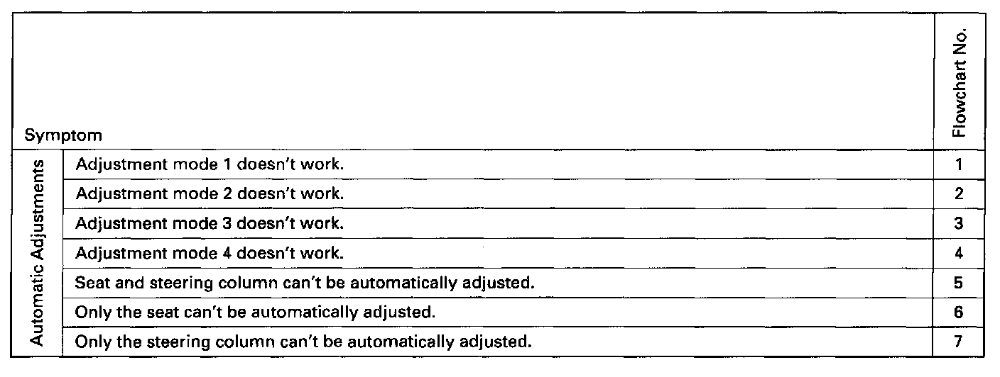
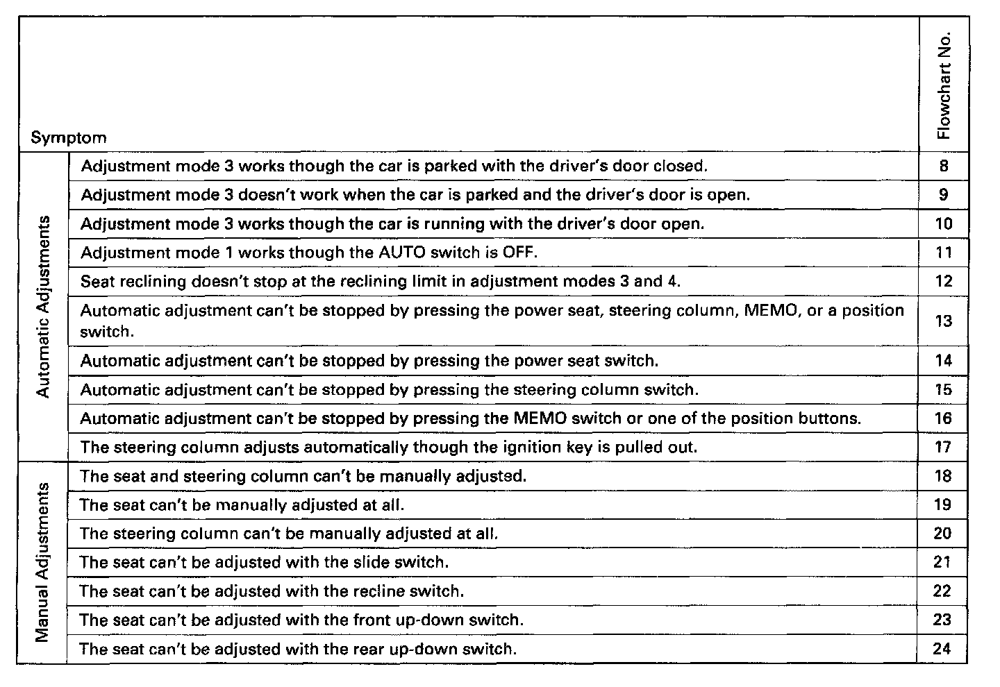
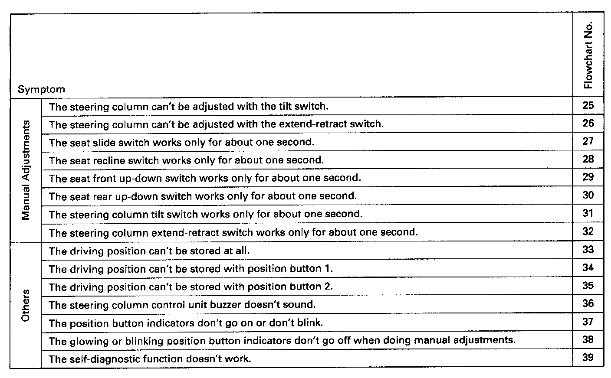

Troubleshooting Guide - Driving Position Memory System (DPMS)



TROUBLESHOOTING GUIDE
After completing the power and ground tests, select the flowchart(s) listed above for the symptom(s) you want to troubleshoot. If the symptom(s) are related to automatic adjusting, read first the explanation below for the automatic adjustment modes.
NOTE:
- Make all voltage checks in the flowcharts with the connectors connected.
- Make all continuity checks in the flowcharts with the connectors disconnected.
- When backprobing, be careful not to cause shorts or damage wire insulation.
- In the flowcharts, "DPMS control unit" stands for "driving position memory system control unit", "PS control unit" stands for "power seat control unit", and "SC control unit" stands for "steering column control unit".
- Refer to Diagrams/Connector Views for images of all control units and their connectors. Connector Views
- All connector views in the flowcharts are from the wire side.
Automatic Adjustment Modes
Mode 1:
When the ignition key is pulled out (ignition switch turned OFF) with the AUTO switch (in the steering column switch assembly) ON and the car parked (shift lever in [~), the steering column will automatically move to the highest tilt position and the fully-retracted position to ease exit from the car.
Mode 2:
When the ignition key is inserted at the end of mode 1, without turning the ignition ON and with the car still parked, the steering column will return to the position it had before mode 1 began.
Mode 3:
When one of the position buttons is pressed (one touch) with the car parked (shift lever in [P]), the driver's door open, and the ignition key inserted, the seat and steering column will move to their memorized positions. (If the key is not inserted, only the seat will move.)
Mode 4:
When you press and hold one of the position buttons with the driver's door closed and the ignition key inserted, the seat and steering column will move to their memorized positions. (If the key is not inserted, only the seat will move.)